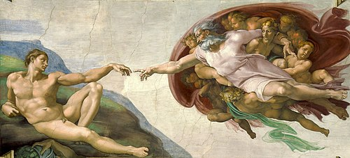
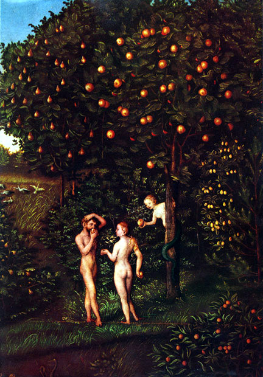

神创造世界的目的

- 神学家赫尔曼·巴文克指出：神创造世界，是因为祂愿意如此。
上帝为何创造万有？
神与亚当的立约

- 神给亚当顺服的命令——不可吃分别善恶树的果子（创2:16-17）。
- 悖逆则必定死。
行为之约的核心
神的审判与遮盖
- 夏娃生育加增痛苦，亚当必劳苦，地也受咒诅（创3:16-19）。
- 神亲自用皮子为他们作衣，预表羔羊牺牲以遮盖罪（创3:21）。
- 亚当和夏娃被逐出园，这其实是处于神的怜悯。
这后裔就是耶稣基督——从道成肉身到死里复活
- 耶稣是“神本体的真像”（来 1:3），道成肉身显明父神。
- 他是亚伯拉罕与大卫的后裔（太 1:1），是外邦之光（路 2:32）。
- 他是童女生子，圣灵感孕，是超自然的“应许之子”。
- 他是犹太人的王（可 15:2），也是和平的君与受苦的仆人。
- 他死在十字架上，三日后复活，“伤蛇的头”，战胜死亡权势！
总结与回应

- 《创世记》3:15 的应许在耶稣基督里完全应验。
- 神的救赎历史是一条连贯的线索——“那一位后裔”。
- 这故事不仅是历史，更是我们信仰的根基与盼望。
- 回应：我们是否认识并信靠这位后裔——耶稣基督？